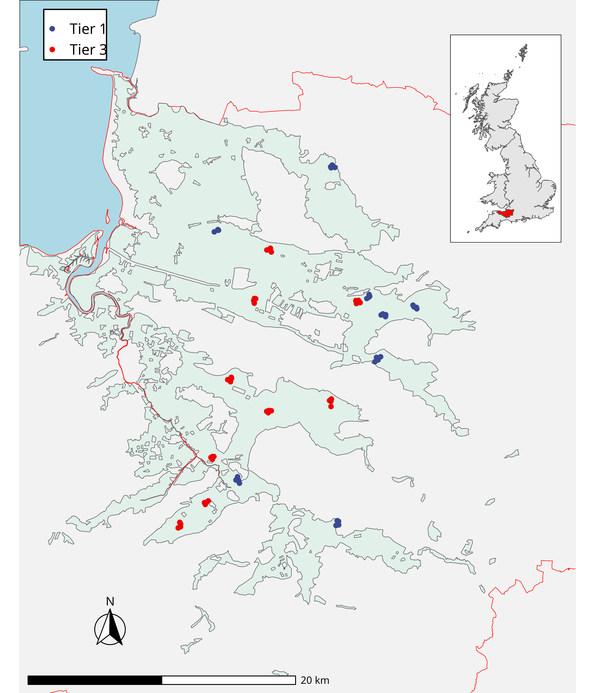
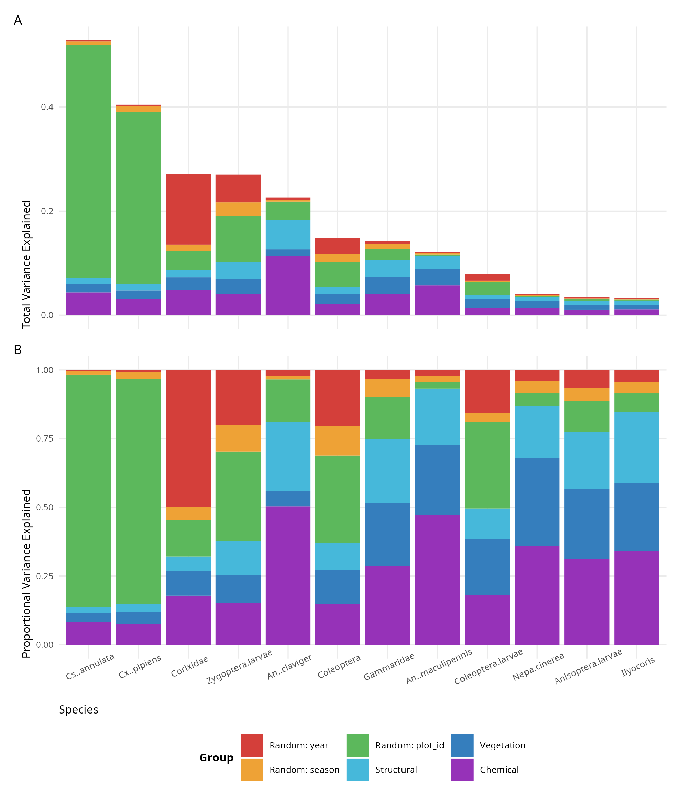
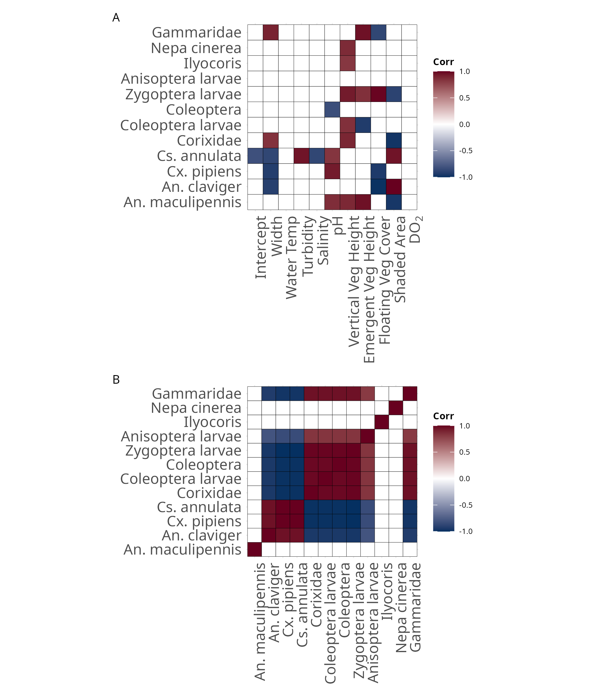

| Species | Site Prevalence (%) | Total Abundance | Mean per sample abundance | SD |
|---|---|---|---|---|
| An. maculipennis s.l | 43 (13%) | 105 | 2.44 | 2.22 |
| An. claviger | 36 (11%) | 292 | 8.11 | 11.84 |
| Cx. pipiens s.l | 32 (10%) | 3248 | 101.50 | 244.43 |
| Cs. annulata | 40 (13%) | 3250 | 81.25 | 160.62 |
| Corixidae | 84 (26%) | 647 | 7.70 | 20.89 |
| Coleoptera larvae | 62 (19%) | 139 | 2.24 | 1.70 |
| Coleoptera | 86 (27%) | 308 | 3.58 | 3.30 |
| Zygoptera larvae | 83 (26%) | 349 | 4.20 | 5.55 |
| Anisoptera larvae | 17 (5%) | 31 | 1.82 | 1.42 |
| Ilyocoris cimicoides | 10 (3%) | 19 | 1.90 | 2.18 |
| Nepa cinerea | 10 (3%) | 11 | 1.10 | 0.32 |
| Gammaridae | 24 (8%) | 103 | 4.29 | 4.65 |
Vegetation complextity drives mosquito community composition in a UK wet grassland
Chapter 1
Daniel smith ![]()
Stefanie Schäfer
Bethan Purse
Abstract
Abstract to be filled and reiterated on after final draft.
Introduction
Invasive Aedes mosquitoes increase this risk in urban regions through the increased spread of arboviruses such as Dengue, Chikungunya and Zika. This risk is compounded by increased interfaces between human habitation, agriculture and natural ecosystems in peri-urban and rural areas, where both native mosquitoes and invasive species pose significant risk to human health (e.g., West Nile Virus, Usutu Virus, Sindbis, Rift Valley Fever). Increased and use change, climate change and increased globalization are key drivers of this MBD risk. Globalization and increased trade facilitates the spread of invasive Aedes species quicker than naturally possible (Gottdenker et al., 2014). Rapid urbanization and anthropogenic land use change including increased agricultural intensification is increasing the available interface at which people and mosquitoes can interact and be exposed to potential MBDs (Meyer Steiger et al., 2016; Townroe & Callaghan, 2014). Climate change will increase mosquito species ranges as minimum temperatures rise and mosquito larval development becomes possible in more northern regions, leading to increased seasonality of disease and mosquito breeding seasons (Campbell et al., 2015; Medlock & Leach, 2015).
Individual exposure to mosquitoes is closely linked to human habitat use. Lambin et al. (2010) showed how human vocation, land use and exacerbated the risk of contracting Lyme disease and other haemorrhagic fevers. While Reiner et al. (2014) illustrated the importance of socially driven movement in perpetuating Dengue transmission, particularly within modified ecosystems and habitat interfaces. In parallel, there is an increased public and governmental policy in Europe on enriching biodiversity and managing natural habitats to maximize the provision of ecosystem services (DEFRA, 2018; Peh et al., 2014).
Wetlands are prized for their high biodiversity, ability to act as refuges for endangered or threatened species, and their utility in regulating hydrological processes (Gibbs, 2000; Keddy et al., 2009). Yet, wetland ecosystems also provide habitats for mosquitoes which are an integral part of wetland food chains, particularly in their aquatic larval stage (Niemi et al., 1999). Understanding how management and restoration of wetlands can influence MBD risk is often overlooked, especially in areas where mosquitoes and MBD risk are historically low, despite the recent spread of invasive mosquitoes and increase in MBD risk (Medlock et al., 2012; Medlock & Leach, 2015).
Examples of wetlands and mosquitoes
There is an urgent need to understand how these policy-driven changes in natural ecosystems may impact MBD risk, and how these changes can alter interactions with animal and human hosts, and therefore may trade off against valuable biodiversity, agricultural and economical ecosystem services (Acreman et al., 2011; Dale & Knight, 2008). A comprehensive review by Rey et al. (2012) discusses the importance of wetland management in North America through decreasing suitability of breeding sites for mosquitoes and increasing biodiversity of predators, however these control methods can often be at odds with management plans (Russell, 1999). Similarly, in South Africa, the reduction of wetland water levels during mosquito breeding seasons leads to desiccation of mosquito larvae during development and can prove an adequate control method, but negatively impacts other aquatic flora and fauna of the wetland (Malan et al., 2009). Wetland management decisions directly impact mosquito populations: increased nitrogen levels from fertiliser run-off increased pollution-resistant mosquito abundance ninefold in a constructed American wetland (Sanford et al., 2005). Increased emergent vegetation and sediment build-up can lead to warmer waters and an increase in the density of culicine mosquito species and draining of water levels can reduce these numbers, but conversely make the habitat more suitable for An. maculipennis a known nuisance biter (Medlock & Vaux, 2015a). Drought conditions arising from mismanagement of permanent wetlands can shift community compositions of mosquitoes from anopheline to culicine species and thus associated disease risk can increase or change depending upon vector status and localised disease prevalence in reservoir hosts (Chase & Knight, 2003).
Drivers for wetland creation in the UK are linked closely with overarching government strategy to achieve more sustainable farming initiatives, increase biodiversity and provisioning local and regional flood resilience programs (DEFRA, 2018, 2023a, 2023b). These strategies generally involve recreating, restoring and managing existing wetlands, for example payments to agricultural stakeholders to modify or maintain wetland environments and receive compensation for doing so. Significant wetland restoration has already taken place in the UK, with significant progress on restoring and maintaining large salt marsh wetlands and grassland wetlands in the UK (Medlock & Vaux, 2015a; WWT, 2023).
These projects are expected to improve natural habitats for rare species and improve local ecosystems considerably, but very few studies and reports consider how wetland creation and management may influence the risk of MBD apart from recent handbooks (Hawkes et al., 2020). Largely we consider this to be because MBD risk in the UK is currently extremely low and awareness of this with the last known case of endemic malaria in the UK dates back tot he early 20th century, however changing climates and spread of invasive mosquitoes mean MBD may become a credible endemic health problem for the UK in the future (Chin & Welsby, 2004; Medlock et al., 2018). It is undeniable that wetland restoration and creation will most likely have a net positive benefit on UK biodiversity, but the creation of wetlands can increase the abundance of mosquitoes, as well as lead to more direct contact between mosquito-borne disease reservoirs, such as waterfowl, and human populations, which use these areas for recreation (Dale & Knight, 2008). Failing to consider the impact of mosquito habitat creation could lead to unforeseen risks of MBD.
Currently we understand relatively little about how wetland management strategies can impact mosquito abundance and community composition in Europe and particularly the UK and the resultant risk of disease transmission. In Spain wetland habitats were identified as important drivers of mosquito abundance and identified that large population centres close to wetland habitats is a priority for vector borne disease surveillance and control due to increased disease risk (Ferraguti et al., 2016). Golding et al. (2015) found that predators of mosquitoes appeared to restrict mosquito prevalence at a wetland site in the UK and suggested that increasing habitat suitability for predators could increase biodiversity and reduce mosquito numbers.
Species distribution models have been applied at national, sub-national and local scales to study the impacts of wetland changes on individual mosquito vectors. However, community modelling approaches such as joint species distribution models (Golding & Harris, 2015; Ovaskainen & Abrego, 2020; Wilkinson et al., 2019) may be more advantageous for identifying shared responses to environmental conditions (Poggiato et al., 2021) as management changes, and for accounting for biotic interactions such as competition and predation, that strongly influence mosquito population dynamics and persistence (Beketov & Liess, 2007; Braks et al., 2004; Saha et al., 2012) and will likely modulate individual vector species responses to wetland changes (Rey et al., 2012).
This study generates mosquito abundance data and applies community joint modelling methods to sampled larval and adult mosquito populations in the UK’s largest wetland grassland, which is subject to long term managment under extensive agri-environmental schemes. Here we investigate the impact of implemented agri-environmental measures on mosquito community abundance and composition, where water level, grazing pressure and human intervention are differentially managed across a UK (Table 1). We want to understand the role of abiotic (water chemistry, channel morphology) and biotic factors (vegetation structure, predator communities) in determining larval mosquito community composition. Additionally, we want to determine whether wetland management strategies under recent agri-environmental schemes are likely to have increased the larval abundance and diversity of key UK mosquitoes with known vector status, and determine what habitat management techniques are likely to influence community composition fo these vectors. In areas where management strategies encourage an increase in water levels, we expect to see a higher density of mosquitoes commonly associated with permanent wetland habitats, particularly those that overwinter such as An. claviger. In more extensively managed areas we would expect to find the opposite, with the structural complexity of the habitat to be more appropriate for species such as An. maculipennis known to have an affinity to warmer, open habitats (Hawkes et al., 2020).
Methods
Study Site
The focal UK wetland, the Somerset Levels and Moors (SLM) is one of the largest wetlands in the UK, covering 650km2 in the southwest of England, Somerset, with high biodiversity an active agricultural industry and tourism (Acreman et al., 2011). Pumping of water and irrigation of these flood waters, which began as early as the 9th century and intensified in the 20th century, means that much of this landscape has now been transformed into peat-based pastures primarily used for grazing. Since 1987, SLM has been subject to agri-environmental schemes that aim to enhance and integrate flood management and biodiversity ecosystem services in wetlands. The SLM provides key ecosystem services to local people and is a site of high biodiversity with notable numbers of wading and migratory birds resident throughout the year (Acreman et al., 2011).

To restore this environment to a more natural state while maintaining agricultural viability the SLM was denoted as an environmentally sensitive area (Morris et al., 2008). This agri-environmental scheme encouraging lower grazing pressure, reduced management of the fields and surrounding ditches during winter and spring periods, and most importantly stipulated a minimum water level in these areas which larger volumes of water being present all year round in these Tier 3 managed areas for enhanced flood management.
| Category | Tier 1 (T1) | Tier 3 (T3) | Impact |
|---|---|---|---|
| Water level | Water level must be at least 6” deep in winter. | Water level must be always at least 12” deep. | Larger areas of flooded wetland are likely to be beneficial for insect diversity, including those species that are suspected or known mosquito predators but the impact of management tiers and the water level may differ between many species with large life history differences that are difficult to interpret (Medlock & Snow, 2008). |
| Intervention | Graze with cattle or sheep but avoid poaching, under-grazing or over-grazing. | Graze only cattle and none before May 2nd, avoid poaching, under-grazing or over-grazing. Restrict grazing density to one animal per 0.75 hectare. | Decreases grazing density may lead to lower levels of mosquito abundance, and increased vegetational structural complexity, potentially suitable for species such as An. claviger who is primarily mammilophilic and favours enclosed habitats |
| Grazing | Graze with cattle or sheep but avoid poaching, under-grazing or over-grazing. | No mechanical operations between March 31st and July 1st. Limiting the ability to dredge or brink waterbodies. Do not cut or top the grass after 31 August. |
The limitation of mechanical intervention means we would expect to see more structurally complex habitats in these places and find mosquitoes here that have an affinity for taller more dense vegetation. We would expect clades of invertebrates with long life cycles to be less prevalent in these areas where dredging may take place (Hawkes et al., 2020; Rey et al., 2012). |
| Fertiliser | Do not exceed your existing level of inorganic fertiliser and in any case do not exceed 25kg of nitrogen, 12.5kg of phosphate and 12.5kg of potash per hectare each year. | Apply no inorganic fertiliser and do not exceed your existing level of organic manure provided it is only home-produced cattle farmyard manure and does not exceed 25 tonnes per hectare per annum. No slurry should be applied. | Where we see less stringent measures on fertiliser usage in Tier 3 areas, we expect these areas to be more suitable for species with known tolerances, however the magnitude of this impact may be small considering the wide range of polluted conditions for species such as Cs. annulata and Cx. pipiens can breed (Medlock & Vaux, 2015a). |
Field Data Collection
We identified 17 locations in the SLM that had potential to harbour mosquito larvae and were equally split between Tier 3 (n = 9) and Tier 1 (n = 8) management schemes (Fig. 1). At each of these locations four plots connected by waterways were identified within a 500m and selected for sampling. Each site was sampled once in each of three seasons, spring (May), summer (June/July) and autumn (August/September), from 2009 to 2011. Invertebrates were collected from the sample sites using dip-netting: each sample site was comprised of 5-6 dip-points along the waterbody roughly one meter apart from each other. In each seasonal sampling period, each of these dip points was sampled 3 times, with care to dip both the centre and edges of the waterbody.
We recorded the abundance of any macroinvertebrate species that were either mosquito larvae, or suspected/known predators of mosquito larvae, and aggregated these across all dips for each sampling site. We identified mosquitoes visually down to species or species complex level using the identification keys of Schaffner et al. (2001). Other aquatic macroinvertebrate species were identified visually down to order and suborder where possible using Dobson et al. (2012). We estimated percentage cover and height of plant species in the area identified and once recorded to genus or species level we grouped them into functional structural types of vertical, emergent and floating vegetation (see S1). We also measured structural and physiochemical parameters of the waterbody at each sampling site averaged across all samples taken for each site (Table 2).
| Variable | Description | Impact on mosquito abundance |
|---|---|---|
| Floating vegetation (%) | Percentage of the water surface covered by plant vegetation. | Previous studies illustrate the effects of floating aquatic plants inhibiting Culex pipiens and other culicine species ability to reach the surface for air, and in tandem also have an insecticidal effect on mosquito populations increasing mortality (Cuthbert et al., 2020; Eid et al., 1992) |
| Vertical Vegetation Height (cm) | The height of vegetation growing alongside the water body. | Increased structural complexity may lead to more favourable microclimates for mosquito presence and abundance, and increase the availability of resting sites in between feeding and oviposition (Sauer et al., 2021) |
| Emergent Vegetation Height (cm) | The height of vegetation that grows from the waterbody itself. | Like vertical vegetation height, but emergent vegetation also adds structural complexity under water which may improve larval survivability through predator avoidance. Underwater vegetation also mosquitoes with unique life histories such as Coquillettidia richiardii which are reliant on vegetation for larval development. |
| Shaded Water (%) | Percentage of the water surface that was shaded upon visiting. | Expect a positive correlation as shading driven mainly by emergent and overhanging vegetation. Allows resting area for mosquitoes during ovipositing and primary productivity in the water drops favouring filter feeders over grazing macroinvertebrates. Previous studies have also shown an increase in mosquito abundance in shaded areas (Mokany et al., 2008). |
| Width (cm) | Width of the waterbody. | Unknown expected association between species and rhyne width, and no studies to our knowledge have commented on structural properties of similar waterbodies and their impact on mosquito abundance. |
| Water Temp (°C) | Water temperature at the time of sampling. | Expect positive correlation for species, mosquitoes have higher developmental times and survival rates at higher temperatures, particularly for anopheline species (Bayoh & Lindsay, 2004; Mereta et al., 2013; Rydzanicz & Lone, 2003). |
| Dissolved 02 (ppm) | Concentration of oxygen dissolved in the water. | Little response expected from mosquitoes likely to be present in the UK as many are tolerant to low and high levels of DO2 response depending on species. Some Anopheline species exhibit negative correlation with DO2 (Mereta et al., 2013). |
| pH | Scale of how acidic/basic the water was at time of sampling. | Most mosquitos prefer neutral pH levels for optimum growth, and are tolerant to moderate fluctuations around this, though some species of genus Culex are particularly tolerant to high pH levels (Emidi et al., 2017; Liu et al., 2019). |
| Turbidity | Clarity of water, indication of water flow. | More turbid waters are expected to increase mosquito larvae survivability as shown in previous studies where predator efficiency is reduced (Cano-Rocabayera et al., 2020; Utne-Palm, 2002). |
| Salinity (ppt) | Salt content of the water body. | Salinity of water directly affects mosquito presence with salinity tolerance varying across species. |
Statistical Analysis
We used the R package Hierarchical Modelling of Species Communities (HMSC) framework to explore how biotic and abiotic interactions drive mosquito larval distribution across the SLM (Ovaskainen et al., 2017; Ovaskainen & Abrego, 2020). This implementation of a Bayesian multivariate hierarchical generalized mixed linear model aims to alleviate the interdependency of species responses to the environment and species responses to each other in the ecosystem, by modelling all species simultaneously and accounting for each species responses to measured and unmeasured environmental covariates through latent variable factors (Wilkinson et al., 2019).
We collected a total of 402 data points from 17 different sampling areas. To account for seasonality, we attempted sampling three times per year over a three-year period from 2009 to 2011. After excluding inaccessible areas and water bodies that were dried or drained during certain seasons and therefore unsuitable for sampling, we identified 320 unique sampling points that were used in our model and represent 67 distinct combinations of site, season, and year. In these unique sampling points, we excluded all species that occurred less than ten times to increase model stability (Ovaskainen & Abrego, 2020). In this case we consider the presence of plant species as an abiotic driver as we expect them to function as a regulator of population fitness through shielding of predation or similar processes (Saha et al., 2009).
To understand how biotic and abiotic factors determine mosquito population presence, we utilized a multivariate probit model that was fitted to the presence-absence data obtained from our sampling sites with our abiotic covariates used as predictive variables on a linear scale (Table 2). To account for potential spatial biases in the sampling data, we incorporated a distance matrix that represented the spatial scales between each sampling unit as a spatially structured random effect. Furthermore, we considered the impact of repeated sampling at sites and the temporal effects of sampling methods by including a nested random effect that accounted for both the year of sampling and the season within that year. In addition, we aimed to construct abundance models that included the same covariates, as we hypothesized that biotic interactions would have a greater impact on species abundance rather than species presence. However, due to the high complexity of the model, it was deemed computationally infeasible to achieve an acceptable fit (Howard et al., 2014).
For model fitting, we used the custom Bayesian sampling procedure from the HMSC package (Tikhonov et al., 2022). Each model was fitted with 4 MCMC chains with 1000 samples per chain at a thinning rate of 1000 for a total of 4 million MCMC samples in total. Convergence was measured using Gelman and Rubens potential scale reduction factor (PSRF), and values under >1.1 are considered converged (Gelman & Rubin, 1992). Goodness of fit was measured using species-specific Tjur’s R2 values and the area under curve (AUC) statistic (Lobo et al., 2008; Tjur, 2009). Predictive power of models was measured using k-fold (k=5) cross validation and measuring the AUC statistic. To better understand the drivers behind community composition, we want to understand the importance of each predictor variable in our model. Here we can address the variance contributed to the model through each explanatory variable by performing variance partitioning analysis (see 69-70, Ovaskainen & Abrego, 2020).
To understand if management practices impact the presence of mosquitoes, we undertook a post-hoc analysis of all covariates that were significantly associated with mosquito presence. Bayesian multivariate models were built in the probabilistic programming language Stan using the BRMS package in R (Bürkner et al., 2022; Carpenter et al., 2017). We modelled the significant covariates in separate models against management level as a categorical factor, with both a random effect for site and a nested random effect of season within year to account for spatio-temporal differences in covariate distribution.
Results
Sampling
We recorded 12 different taxa present in the SLM that occurred more than 10 times (Table 3). We captured and identified 6825 mosquito larvae. Culiseta annulata (n = 3250, 47.1%) and Cu pipiens (n = 3248, 47.1%) were most abundant, while Anopheles maculipennis (n = 105, 1.52%) and Anopheles claviger (n = 292, 4.23%) were less abundant. An. maculipennis were most prevalent, occurring in 13% of the data points, followed by Cu. annulata (12%), An. claviger (11%), Cx. pipiens (10%), and lastly Ocherlotatus caspius which was present in just a single site (> 0.1%). Because of the low abundance and low prevalence, Och. Caspius was omitted from the subsequent analysis [see S1].
Of the sampled macro invertebrate predators, we identified eight taxa that were prevalent enough to consider in this statistical analysis (Table 3). Of these taxa, four had particularly high prevalence and abundance across the sites, with Coleoptera present in the most sampling units (27%, n = 308), followed by Corixidae which were also the most abundant predator species (26%, n = 647), Zygoptera (25%, n = 349) and Coleoptera larvae (19%, n = 139). The other four taxa had a much lower prevalence and abundance across all sampling units, including Gammaridae (8%, n = 103), Anisoptera (5%, n = 31), Ilyocoris cimicoides (3%, n = 19) and Nepa cinerea (3%, n = 11).
Model Fit
Convergence of the HMSC model was satisfactory, with all chains and parameters converging successfully (PSRF > 1.01) with an effective number of samples (see S1). Model runtime was 107 hours on a intel i5 10500T @2.3GHz using an R docker environment configured with OpenBlas (Nüst et al., 2020). All AUC values for each species are 0.7 or higher, suggesting very good explanatory performance, and adequate predictive performance [see S1].
Variance Partitioning
We examined the importance of each covariate in our model in explaining the presence of species distributions by partitioning the variation explained by each of these covariates (Borcard et al., 1992). The model managed to capture a substantial proportion of total variance for most mosquito species, Cs. annulata (53%), Cx. pipiens (40%) and An. claviger (23%), with An. maculipennis (13%) performing the worst (Figure 2). Across mosquito species, we found that spatiotemporal effects accounted for on average 43% (S.D. 18%) of all variation explained by the models (Figure 2). Spatial random effects accounted for substantial variation in Culicine species which contrasts directly with the low values reported for Anopheline species. Temporal effects explained less variation in presence of mosquito species compared to other invertebrates, and little in Anopheline species (Figure 2).

Species Responses
Cs. annulata was significantly positively correlated with high turbidity, high pH and low salinity water characteristics. Cs. annulata was also associated with shadier areas and narrower waterbodies. Cx. pipiens presence was significantly correlated with wider waterbodies, water with higher pH and in areas where floating vegetation cover was less . An. claviger was significantly more likely to be found in areas with narrow waterbodies, low percentage cover of floating vegetation and more shaded environments (Figure 3 A) . An. maculipennis was only significantly associated with higher pH values, while being significantly associated with less shady environments.
We found significant positive residual species associations between all mosquito species except An. maculipennis after accounting for environmental responses in the HMSC model (Figure 3 B). Additionally, we found that all species of mosquito expect An. maculipennis show significant negative associations with potential predator taxa including Coleoptera, Anisoptera and Zygoptera, Corixidae and Gammaridae. Ilyocoris, Anisoptera larvae and Nepa cinerea do not show any significant associations with any other species. All other predator species show significant positive associations with one another .

Differences in covariates between management tiers
We found that vegetation varied significantly between the Tiered management levels. In general we found a shift from lots of floating vegetation and smaller emergent and vertical vegetation in Tier 1, to taller vegetation that was overhanging and more prevalent in Tier 3 areas with little floating vegetation [see S1].
When vertical vegetation was present it was on average 20cm taller in Tier 3 areas than Tier 1 and this was signfiicant (95% CI[1.5, 42.9]). The chances of there being no vertical vegetation in Tier 3 was 20% less likely than in Tier 1 and this was significant (95% CI [-0.29, -0.10]). Similarly, we found that emergent vegetation was 29% more likely to be present in Tier 3 areas (95% CI [-0.39, -0.18]), but when emergent vegetation was present there was no significant difference in the height of that vegetation (95% CI [-0.39, 11.4]). There was no measurable difference in the probability of floating vegetation cover being 0% (95% CI[-0.15, 0.06]) or 100% (95% CI[-0.1, 0.04]) between tiers, but on average there was 10% less floating vegetation cover in Tier 3 areas than in Tier 1 areas and this was significant (95% CI[-0.18, -0.01]). The amount of shaded area did not vary significantly between tiers (95% CI[-0.26, 0.01]), but the probability of a waterbody being completely shaded was 48% higher in Tier 3 areas than Tier 1 (95% CI[-0.8, -0.2]), and the probability of a waterbody having no shade was 10% more likely in Tier 3 areas (95% CI[0.03, 0.016]).
We found that the physicochemical characteristics of the tiers were very similar and did not vary significantly between management strategies. Waterbodies were 8.45cm wider in Tier 3 managed areas, but this difference was not statistically significant (95%CI [-7, 24]). There was no measurable difference in turbidity (95% CI [-0.18, 0.16]) or salinity (95% CI [-0.14, 0.12]) between the management tiers. Lastly, pH values were -0.3 lower in Tier 3 areas but this was non-significant (95% CI [-0.6, 0.03]).
Our study provides the first assessment of the impacts of abiotic and biotic factors on mosquito community composition in coastal grazing marshes in the UK, including factors arising from changes in wetland management. We find that management strategy of these tiers creates differences in vegetative complexity and has the ability to influence mosquito species composition between these management strategies.
Abiotic
Here our results affirm findings in previous literature, mosquito species responded significantly to the vegetation complexity in this study, and often aligned with known ecology of species. For example, we found that An. maculipennis was characterised as preferring more open habitats that were wider and exposed to more sunlight, but An. claviger was associated closely with water bodies that were smaller, more shaded and had little floating vegetation (Hawkes et al., 2020; Medlock & Vaux, 2015b)
The vegetative complexity of an area can influence mosquito community composition through the provision of microhabitats for mosquito larvae and adults. Mosquito larvae tend to thrive in areas with high vegetative complexity, such as wetlands and marshes, due to the presence of a variety of aquatic plants that provide shelter, food, and protection from predators (Becker et al., 2010; Medlock & Leach, 2015). Additionally, adult mosquitoes also benefit from vegetative complexity as it provides them with shade and protection from the sun and wind (Becker et al., 2010). Previous findings have shown that areas with higher vegetative complexity tend to have a greater diversity and abundance of mosquitoes, a review by Rey et al. (2012) found that wetlands with high vegetative complexity had a greater diversity of mosquito species compared to wetlands with low vegetative complexity.
Our analysis revealed that the physicochemical characteristics of the water played a major role in explaining the variation in occurrence among mosquito species (Figure 2). The relationship between water temperature, turbidity, salinity, and pH on mosquito life history is complex and varies among species. For example, Cu. annulata exhibits a negative response to saline waters, despite its larvae being tolerant of brackish waters present in coastal floodplains (Marshall, 1938). Prior studies have also shown that turbid waters tend to reduce predator efficacy, particularly with algal turbidity on mosquito larval populations (Cano-Rocabayera et al., 2020; Utne-Palm, 2002). We found that three species of mosquito, Cs. annulata, Cx. pipiens and An. maculipennis, were all positively associated with higher pH environments ( A).
Higher pH values can be associated with increased fertilizer runoff which typically holds a high pH value, because Tier 3 areas are more heavily restricted in fertilizer usage, we would expect to higher species richness in Tier 3 areas, but we find no significant difference in pH levels between management tiers. However, Tier 1 fertilizer usage is already restricted to lower levels than typically used for grazing pasture (Table. 1) and our results suggest that if fertilizer levels were increased, we may find species that are adaptable to polluted waters becoming more prevalent in these areas, such as Cx. pipiens and Cs. annulata (O’Meara et al., 2010).
Considering the results of our study, we show that modifying habitat structure through vegetation management would be more effective in altering or influencing mosquito community composition, as demonstrated in other temperate climates (Rey et al., 2012). We should reiterate that often times decreasing vegetation complexity can negatively impact biodiversity of mosquitoes as mentioned above, as well as potential predator species, thus the conflicted pressures of biodiversity and mosquito management must be carefully considered. Despite the minimal impact of physicochemical characteristics of the water body for mosquito species, we fail to consider the relationships between these characteristics and the resultant composition of the vegetation. It is not unlikely that these water parameters would influence the makeup of a vegetative community which we have shown is intrinsically linked to mosquito larvae habitat preference (Figure 3 A), and this deserves future investigation to understand the complex relationship between all these factors. However, considering the relatively small geographic scale of our sampling and the long historic management of the Somerset Levels and relatively minimal variation in water chemistry characteristics we believe these differences would be minimal in this instance
Biotic
When examining residual correlations between species using joint species distribution modelling frameworks we should be cautious of over-interpretation, these residual correlations can be due to shared response to missing environmental drivers, common habitat preferences and close phylogenetic relationships, so conclusions of these “interactions” should draw reasonable skepticism if results are not in line with expected or known ecology (Dormann et al., 2018). Our findings reveal a strong positive association among three mosquito species, An. claviger, Cu. pipiens, and Cu. annulata (Figure 3 B). This association between Cx. pipiens and Cs. annulata, is expected given their shared versatility in adapting to a variety of habitats (Clements, 1992), though they are likely to compete for similar resources within these environments. Thissuggestst that the effect of interspecific competition on their distribution is less important than habitat requirements on prevalence (Chandrasegaran & Juliano, 2019; Stav et al., 2005).
All mosquito species except An. maculipennis show negative associations with most predator taxa (Figure 3 B). Anisoptera, Zygoptera and Gammaridae are known predators of mosquito species, consuming a substantial number of larvae each day (Medlock & Snow, 2008; Roberts, 2012; Saha et al., 2012). This highlights the importance of maintaining high levels of biodiversity to maintain natural biological predators of mosquitoes in abundance. These results mimic findings showing how Odonata provide effective management of mosquito larvae through predation and have been utilized in areas as a control agent (Chandra et al., 2008). Ensuring that wetland environments are suitable for macroinvertebrate predators studied here also may also boost populations of other mosquito predators typically associated with wetlands, such as anurans and fish species which are known effective biological control agents (Benelli et al., 2016; Chandra et al., 2008; Saha et al., 2012). This inherent link in biodiversity of wetland mosquito predator species and mosquito population control should be carefully considered when implementing new legislation or management practices, as these predators can provide regulating services that may minimize nuisance biting or potential disease risk in surrounding areas.
Conclusions
In the Somerset Levels and Moors we show the importance of vegetation as a driver of mosquito prevalence and community composition. Our study suggests that decreased mechanical intervention to control vegetation in grassland wetlands, through mowing, ditching and brinking, could lead to an increase in Cu. pipiens and Cu. annulata, of which Cu. pipiens is a prevalent nuisance biter and known vector of several mosquito borne diseases (West Nile Virus, Sindbis, Usutu). However, decreased mechanical intervention of habitats may be required as part of future or ongoing agri-envrionment schemes and the aims of these schemes should be carefully balanced with mosquito control objectives and any disease risk. We also show that vegetation management and creation of open sunlit waterbodies is likely to increase the suitability of the habitat for species such as An. maculipennis (Hawkes et al., 2020; Medlock & Vaux, 2015a). Considering the abundance of Culicine species in this study was 10–30 times that of Anopheline species despite having very similar prevalence rates, this may be a favorable management strategy for reducing the density of nuisance biting species in a wetland area (Table. 2).
For example, in the UK, WNV is largely considered to be a more prominent problem than the re-emergence of malaria given future climate predictions and current geographical spread and vector status of native species (Arinaminpathy et al., 2009; Medlock & Leach, 2015). In such a case it may be preferable from a disease management perspective to limit the range of habitats suitable for Culicine species where waterfowl (a large reservoir population) are also present and WNV risk is increased and instead opt for habitats that promote predominantly Anopheline dominant community compositions to manage relative disease risk. However, as discussed in Rey et al. (2012) the trade-off between wetland restoration and mosquito borne disease risk must be carefully managed to achieve a risk-benefit balance acceptable for policymakers that deliver on providing ecosystem services while minimizing MBD risk. Here we have shown the utility of joint modelling techniques in determining the driving factors of mosquito community composition between contrasting management tiers and the subsequent differences this has for MBD risk (Figure 3; Figure 2).
In the future, integration of joint modelling techniques and empirical datasets as presented here could work in tandem with existing ecosystem service modelling frameworks and other biodiversity modelling methods to provide an effective way to maximize the output of wetland areas while minimizing the risk of MBD in the future.
References
Acreman, M. C., Harding, R. J., Lloyd, C., McNamara, N. P., Mountford, J. O., Mould, D. J., Purse, B. V., Heard, M. S., Stratford, C. J., & Dury, S. J. (2011). Trade-off in ecosystem services of the Somerset Levels and Moors wetlands. Hydrological Sciences Journal, 56(8), 1543–1565. https://doi.org/10.1080/02626667.2011.629783
Arinaminpathy, N., McLean, A. R., & Godfray, H. C. J. (2009). Future UK land use policy and the risk of infectious disease in humans, livestock and wild animals. Land Use Policy, 26, S124–S133. https://doi.org/10.1016/j.landusepol.2009.08.026
Becker, N., Petric, D., Zgomba, M., Boase, C., Madon, M., Dahl, C., & Kaiser, A. (2010). Mosquitoes and Their Control. Springer Science & Business Media.
Beketov, M. A., & Liess, M. (2007). Predation risk perception and food scarcity induce alterations of life-cycle traits of the mosquito Culex pipiens. Ecological Entomology, 32(4), 405–410. https://doi.org/10.1111/j.1365-2311.2007.00889.x
Benelli, G., Jeffries, C. L., & Walker, T. (2016). Biological Control of Mosquito Vectors: Past, Present, and Future. Insects, 7(4), 52. https://doi.org/10.3390/insects7040052
Borcard, D., Legendre, P., & Drapeau, P. (1992). Partialling out the Spatial Component of Ecological Variation. Ecology, 73(3), 1045–1055. https://doi.org/10.2307/1940179
Braks, M. A. H., Honório, N. A., Lounibos, L. P., Lourenço-De-Oliveira, R., & Juliano, S. A. (2004). Interspecific Competition Between Two Invasive Species of Container Mosquitoes, Aedes aegypti and Aedes albopictus (Diptera: Culicidae), in Brazil. Annals of the Entomological Society of America, 97(1), 130–139. https://doi.org/10.1603/0013-8746(2004)097[0130:ICBTIS]2.0.CO;2
Bürkner, P.-C., Gabry, J., Weber, S., Johnson, A., Modrak, M., Badr, H. S., Weber, F., Ben-Shachar, M. S., Rabel, H., & Mills, S. C. (2022). Brms: Bayesian Regression Models using ’Stan’.
Campbell, L. P., Luther, C., Moo-Llanes, D., Ramsey, J. M., Danis-Lozano, R., & Peterson, A. T. (2015). Climate change influences on global distributions of dengue and chikungunya virus vectors. Philosophical Transactions of the Royal Society B: Biological Sciences, 370(1665), 20140135. https://doi.org/10.1098/rstb.2014.0135
Cano-Rocabayera, O., Vargas-Amengual, S., Aranda, C., de Sostoa, A., & Maceda-Veiga, A. (2020). Mosquito larvae consumption in turbid waters: The role of the type of turbidity and the larval stage in native and invasive fish. Hydrobiologia, 847(5), 1371–1381. https://doi.org/10.1007/s10750-020-04195-0
Carpenter, B., Gelman, A., Hoffman, M. D., Lee, D., Goodrich, B., Betancourt, M., Brubaker, M., Guo, J., Li, P., & Riddell, A. (2017). Stan: A Probabilistic Programming Language. Journal of Statistical Software, 76, 1–32. https://doi.org/10.18637/jss.v076.i01
Chandra, G., Bhattacharjee, I., Chatterjee, S. N., & Ghosh, A. (2008). Mosquito control by larvivorous fish. Indian Journal of Medical Research, 127(1), 13–27.
Chandrasegaran, K., & Juliano, S. A. (2019). How Do Trait-Mediated Non-lethal Effects of Predation Affect Population-Level Performance of Mosquitoes? Frontiers in Ecology and Evolution, 7. https://doi.org/10.3389/fevo.2019.00025
Chase, J. M., & Knight, T. M. (2003). Drought-induced mosquito outbreaks in wetlands. Ecology Letters, 6(11), 1017–1024. https://doi.org/10.1046/j.1461-0248.2003.00533.x
Chin, T., & Welsby, P. D. (2004). Malaria in the UK: Past, present, and future. Postgraduate Medical Journal, 80(949), 663–666. https://doi.org/10.1136/pgmj.2004.021857
Clements, A. N. (1992). The Biology of Mosquitoes (First edition). CABI.
Cuthbert, R. N., Vong, G. Y. W., Paolacci, S., Dick, J. T. A., Callaghan, A., & Coughlan, N. E. (2020). Aquatic plant extracts and coverage mediate larval mosquito survivorship and development. Biological Control, 145, 104263. https://doi.org/10.1016/j.biocontrol.2020.104263
Dale, P. E. R., & Knight, J. M. (2008). Wetlands and mosquitoes: A review. Wetlands Ecology and Management, 16(4), 255–276. https://doi.org/10.1007/s11273-008-9098-2
DEFRA. (2018). 25 Year Environment Plan.
DEFRA. (2023a). Countryside Stewardship: Higher Tier manual.
DEFRA. (2023b). Countryside Stewardship: Get funding to protect and improve the land you manage. In GOV.UK. https://www.gov.uk/guidance/countryside-stewardship-get-funding-to-protect-and-improve-the-land-you-manage.
Dobson, M., Pawley, S., Fletcher, M., & Powell, A. (2012). Guide to Freshwater Invertebrates: No. 68 (1st Edition). Freshwater Biological Assn.
Dormann, C. F., Bobrowski, M., Dehling, D. M., Harris, D. J., Hartig, F., Lischke, H., Moretti, M. D., Pagel, J., Pinkert, S., Schleuning, M., Schmidt, S. I., Sheppard, C. S., Steinbauer, M. J., Zeuss, D., & Kraan, C. (2018). Biotic interactions in species distribution modelling: 10 questions to guide interpretation and avoid false conclusions. Global Ecology and Biogeography, 27(9), 1004–1016. https://doi.org/10.1111/geb.12759
Eid, M. A. A., Kandil, M. A. E., Moursy, E. B., & Sayed, G. E. M. (1992). Effect of the Duck-Weed, Lemna Minor Vegetations on the Mosquito, Culex Pipiens Pipiens. International Journal of Tropical Insect Science, 13(3), 357–361. https://doi.org/10.1017/S174275840001362X
Emidi, B., Kisinza, W. N., Mmbando, B. P., Malima, R., & Mosha, F. W. (2017). Effect of physicochemical parameters on Anopheles and Culex mosquito larvae abundance in different breeding sites in a rural setting of Muheza, Tanzania. Parasites & Vectors, 10(1), 304. https://doi.org/10.1186/s13071-017-2238-x
Ferraguti, M., Martínez-de la Puente, J., Roiz, D., Ruiz, S., Soriguer, R., & Figuerola, J. (2016). Effects of landscape anthropization on mosquito community composition and abundance. Scientific Reports, 6(1), 29002. https://doi.org/10.1038/srep29002
Gelman, A., & Rubin, D. B. (1992). Inference from iterative simulation using multiple sequences. Statistical Science, 7(4), 457–472.
Gibbs, J. P. (2000). Wetland Loss and Biodiversity Conservation. Conservation Biology, 14(1), 314–317. https://doi.org/10.1046/j.1523-1739.2000.98608.x
Golding, N., & Harris, D. (2015). BayesComm: Bayesian community ecology analysis. R Package Version 0.1-2.
Golding, N., Nunn, M. A., & Purse, B. V. (2015). Identifying biotic interactions which drive the spatial distribution of a mosquito community. Parasites & Vectors, 8(1), 367. https://doi.org/10.1186/s13071-015-0915-1
Gottdenker, N. L., Streicker, D. G., Faust, C. L., & Carroll, C. R. (2014). Anthropogenic Land Use Change and Infectious Diseases: A Review of the Evidence. EcoHealth, 11(4), 619–632. https://doi.org/10.1007/s10393-014-0941-z
Hawkes, F., Medlock, J. M., Vaux, A. G., Cheke, R., & Gibson, G. (2020). Wetland mosquito survey handbook: Assessing suitability of British wetlands for mosquitoes. Natural Resources Institute.
Howard, C., Stephens, P. A., Pearce-Higgins, J. W., Gregory, R. D., & Willis, S. G. (2014). Improving species distribution models: The value of data on abundance. Methods in Ecology and Evolution, 5(6), 506–513. https://doi.org/10.1111/2041-210X.12184
Keddy, P. A., Fraser, L. H., Solomeshch, A. I., Junk, W. J., Campbell, D. R., Arroyo, M. T. K., & Alho, C. J. R. (2009). Wet and Wonderful: The World’s Largest Wetlands Are Conservation Priorities. BioScience, 59(1), 39–51. https://doi.org/10.1525/bio.2009.59.1.8
Lambin, E. F., Tran, A., Vanwambeke, S. O., Linard, C., & Soti, V. (2010). Pathogenic landscapes: Interactions between land, people, disease vectors, and their animal hosts. International Journal of Health Geographics, 9(1), 54. https://doi.org/10.1186/1476-072X-9-54
Liu, X., Baimaciwang, Yue, Y., Wu, H., Pengcuociren, Guo, Y., Cirenwangla, Ren, D., Danzenggongga, Dazhen, Yang, J., Zhaxisangmu, Li, J., Cirendeji, Zhao, N., Sun, J., Li, J., Wang, J., Cirendunzhu, & Liu, Q. (2019). Breeding Site Characteristics and Associated Factors of Culex pipiens Complex in Lhasa, Tibet, P. R. China. International Journal of Environmental Research and Public Health, 16(8), 1407. https://doi.org/10.3390/ijerph16081407
Lobo, J. M., Jiménez-Valverde, A., & Real, R. (2008). AUC: A misleading measure of the performance of predictive distribution models. Global Ecology and Biogeography, 17(2), 145–151. https://doi.org/10.1111/j.1466-8238.2007.00358.x
Malan, H. L., Appleton, C. C., Day, J. A., & Dini, J. (2009). Wetlands and invertebrate disease hosts: Are we askin for trouble? Water SA.
Marshall, J. (1938). The British Mosquitoes. Trustees of the British Museum.
Medlock, J. M., Hansford, K. M., Schaffner, F., Versteirt, V., Hendrickx, G., Zeller, H., & Bortel, W. V. (2012). A Review of the Invasive Mosquitoes in Europe: Ecology, Public Health Risks, and Control Options. Vector Borne and Zoonotic Diseases, 12(6), 435–447. https://doi.org/10.1089/vbz.2011.0814
Medlock, J. M., Hansford, K. M., Vaux, A. G. C., Cull, B., Gillingham, E., & Leach, S. (2018). Assessment of the Public Health Threats Posed by Vector-Borne Disease in the United Kingdom (UK). International Journal of Environmental Research and Public Health, 15(10), 2145. https://doi.org/10.3390/ijerph15102145
Medlock, J. M., & Leach, S. A. (2015). Effect of climate change on vector-borne disease risk in the UK. The Lancet Infectious Diseases, 15(6), 721–730. https://doi.org/10.1016/S1473-3099(15)70091-5
Medlock, J. M., & Snow, K. R. (2008). Natural predators and parasites of British mosquitoesa review. European Mosquito Bulletin, 25, 1–11.
Medlock, J. M., & Vaux, A. G. (2015a). Impacts of the creation, expansion and management of English wetlands on mosquito presence and abundance developing strategies for future disease mitigation. Parasites & Vectors, 8(1), 142. https://doi.org/10.1186/s13071-015-0751-3
Medlock, J. M., & Vaux, A. G. C. (2015b). Seasonal dynamics and habitat specificity of mosquitoes in an English wetland: Implications for UK wetland management and restoration. Journal of Vector Ecology, 40(1), 90–106. https://doi.org/10.1111/jvec.12137
Mereta, S. T., Yewhalaw, D., Boets, P., Ahmed, A., Duchateau, L., Speybroeck, N., Vanwambeke, S. O., Legesse, W., De Meester, L., & Goethals, P. L. (2013). Physico-chemical and biological characterization of anopheline mosquito larval habitats (Diptera: Culicidae): Implications for malaria control. Parasites & Vectors, 6(1), 320. https://doi.org/10.1186/1756-3305-6-320
Meyer Steiger, D. B., Ritchie, S. A., & Laurance, S. G. W. (2016). Mosquito communities and disease risk influenced by land use change and seasonality in the Australian tropics. Parasites & Vectors, 9(1), 387. https://doi.org/10.1186/s13071-016-1675-2
Mokany, A., Wood, J. T., & Cunningham, S. A. (2008). Effect of shade and shading history on species abundances and ecosystem processes in temporary ponds. Freshwater Biology, 53(10), 1917–1928. https://doi.org/10.1111/j.1365-2427.2008.02076.x
Morris, J., Bailey, A. P., Lawson, C. S., Leeds-Harrison, P. B., Alsop, D., & Vivash, R. (2008). The economic dimensions of integrating flood management and agri-environment through washland creation: A case from Somerset, England. Journal of Environmental Management, 88(2), 372–381. https://doi.org/10.1016/j.jenvman.2007.03.023
Niemi, G. J., Hershey, A. E., Shannon, L., Hanowski, J. M., Lima, A., Axler, R. P., & Regal, R. R. (1999). Ecological effects of mosquito control on zooplankton, insects, and birds. Environmental Toxicology and Chemistry, 18(3), 549–559. https://doi.org/10.1002/etc.5620180325
Nüst, D., Eddelbuettel, D., Bennett, D., Cannoodt, R., Clark, D., Daróczi, G., Edmondson, M., Fay, C., Hughes, E., Kjeldgaard, L., Lopp, S., Marwick, B., Nolis, H., Nolis, J., Ooi, H., Ram, K., Ross, N., Shepherd, L., Sólymos, P., … Xiao, N. (2020). The Rockerverse: Packages and Applications for Containerisation with R. The R Journal, 12(1), 437–461.
O’Meara, G. F., Cutwa-Francis, M., & Rey, J. R. (2010). Seasonal Variation in the Abundance of Culex nigripalpus and Culex quinquefasciatus in Wastewater Ponds at Two Florida Dairies. Journal of the American Mosquito Control Association, 26(2), 160–166. https://doi.org/10.2987/09-5971.1
Ovaskainen, O., & Abrego, N. (2020). Joint Species Distribution Modelling: With Applications in R. Cambridge University Press. https://doi.org/10.1017/9781108591720
Ovaskainen, O., Tikhonov, G., Norberg, A., Guillaume Blanchet, F., Duan, L., Dunson, D., Roslin, T., & Abrego, N. (2017). How to make more out of community data? A conceptual framework and its implementation as models and software. Ecology Letters, 20(5), 561–576. https://doi.org/10.1111/ele.12757
Peh, K. S.-H., Balmford, A., Field, R. H., Lamb, A., Birch, J. C., Bradbury, R. B., Brown, C., Butchart, S. H. M., Lester, M., Morrison, R., Sedgwick, I., Soans, C., Stattersfield, A. J., Stroh, P. A., Swetnam, R. D., Thomas, D. H. L., Walpole, M., Warrington, S., & Hughes, F. M. R. (2014). Benefits and costs of ecological restoration: Rapid assessment of changing ecosystem service values at a U.K. wetland. Ecology and Evolution, 4(20), 3875–3886. https://doi.org/10.1002/ece3.1248
Poggiato, G., Münkemüller, T., Bystrova, D., Arbel, J., Clark, J. S., & Thuiller, W. (2021). On the Interpretations of Joint Modeling in Community Ecology. Trends in Ecology & Evolution, 36(5), 391–401. https://doi.org/10.1016/j.tree.2021.01.002
Reiner, R. C., Stoddard, S. T., & Scott, T. W. (2014). Socially structured human movement shapes dengue transmission despite the diffusive effect of mosquito dispersal. Epidemics, 6, 30–36. https://doi.org/10.1016/j.epidem.2013.12.003
Rey, J. R., Walton, W. E., Wolfe, R. J., Connelly, R., O’Connell, S. M., Berg, J., Sakolsky-Hoopes, G. E., & Laderman, A. D. (2012). North American Wetlands and Mosquito Control. International Journal of Environmental Research and Public Health, 9(12), 4537–4605. https://doi.org/10.3390/ijerph9124537
Roberts, D. (2012). Responses of three species of mosquito larvae to the presence of predatory dragonfly and damselfly larvae. Entomologia Experimentalis Et Applicata, 145(1), 23–29. https://doi.org/10.1111/j.1570-7458.2012.01300.x
Russell, R. C. (1999). Constructed wetlands and mosquitoes: Health hazards and management options perspective. Ecological Engineering, 12(1), 107–124. https://doi.org/10.1016/S0925-8574(98)00057-3
Rydzanicz, K., & Lone, E. (2003). Species composition and seasonal dynamics of mosquito larvae in the Wrocław, Poland area. Journal of Vector Ecology, 28(2), 255–266.
Saha, N., Aditya, G., Banerjee, S., & Saha, G. K. (2012). Predation potential of odonates on mosquito larvae: Implications for biological control. Biological Control, 63(1), 1–8. https://doi.org/10.1016/j.biocontrol.2012.05.004
Saha, N., Aditya, G., & Saha, G. K. (2009). Habitat complexity reduces prey vulnerability: An experimental analysis using aquatic insect predators and immature dipteran prey. Journal of Asia-Pacific Entomology, 12(4), 233–239. https://doi.org/10.1016/j.aspen.2009.06.005
Sanford, M. R., Chan, K., & Walton, W. E. (2005). Effects of inorganic nitrogen enrichment on mosquitoes (Diptera: Culicidae) and the associated aquatic community in constructed treatment wetlands. Journal of Medical Entomology, 42(5), 766–776.
Sauer, F. G., Grave, J., Lühken, R., & Kiel, E. (2021). Habitat and microclimate affect the resting site selection of mosquitoes. Medical and Veterinary Entomology, 35(3), 379–388. https://doi.org/10.1111/mve.12506
Schaffner, F., Angel, G., Geoffroy, B., Hervy, J.-P., Rhaiem, A., & Brunhes, J. (2001). The Mosquitoes of Europe. An identification and training programme.
Stav, G., Blaustein, L., & Margalit, Y. (2005). Individual and interactive effects of a predator and controphic species on mosquito populations. Ecological Applications, 15(2), 587–598. https://doi.org/10.1890/03-5191
Tikhonov, G., Ovaskainen, O., Oksanen, J., Jonge, M. de, Opedal, O., & Dallas, T. (2022). Hmsc: Hierarchical Model of Species Communities.
Tjur, T. (2009). Coefficients of Determination in Logistic Regression Models: The Coefficient of Discrimination. The American Statistician, 63(4), 366–372. https://doi.org/10.1198/tast.2009.08210
Townroe, S., & Callaghan, A. (2014). British Container Breeding Mosquitoes: The Impact of Urbanisation and Climate Change on Community Composition and Phenology. PLOS ONE, 9(4), e95325. https://doi.org/10.1371/journal.pone.0095325
Utne-Palm, A. C. (2002). Visual feeding of fish in a turbid environment: Physical and behavioural aspects. Marine and Freshwater Behaviour and Physiology, 35(1-2), 111–128. https://doi.org/10.1080/10236240290025644
Wilkinson, D. P., Golding, N., Guillera-Arroita, G., Tingley, R., & McCarthy, M. A. (2019). A comparison of joint species distribution models for presenceabsence data. Methods in Ecology and Evolution, 10(2), 198–211. https://doi.org/10.1111/2041-210X.13106
WWT. (2023). Publications. In WWT. https://www.wwt.org.uk/about-us/publications.